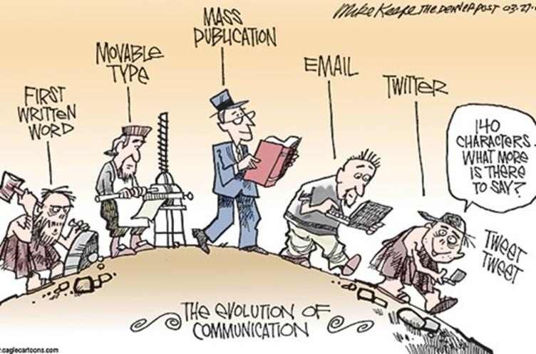

68

23

Save

Communication has evolved greatly. Traditional communication methods such as mail have been overtaken by more sophisticated forms. Electronic Communication methods offer higher speeds; more efficiency, reliability, integrity, security; scale across larger geographical areas and require less resources to use. Tools and services such as e-mail, blogs, podcasts, instant messaging, and social networks among other multimedia methods have changed the way we communicate to a great extent.
In this chapter, we give an overview of the world of networks: we will discuss the following:
This chapter is crucial since some of the concepts learned in it will be useful in understanding the rest of the course.
The need to communicate is human nature. Communication has evolved over the years, from carvings on rocks to more complex forms. The diagram below is an apt description of this evolution.
Modern communication methods are as a result of the evolution of computer networks. Since the first e-mail was sent back in 1965, communication has come a long way.
We are no longer restricted with face to face communication. And with the internet the world has become more interconnected than ever before.
Computer networks are not just responsible for communication, but our entire way of life has evolved. The way we work, the way we interact, among other ways have changed significantly.
Some of the ways we use computer networks include:
This introductory chapter is meant to help you understand the importance of communication over networks. These concepts, will be crucial in understanding this course. We will learn the fundamentals of communications over networks. In the next chapter, we will look at how communication works using the layered models and learn some more concepts.
© 2022 Venom.com All rights reserved